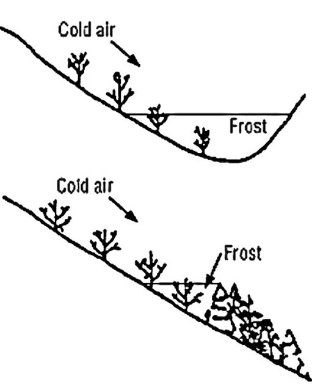
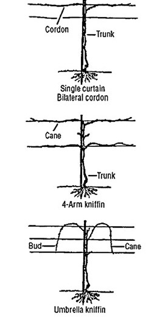
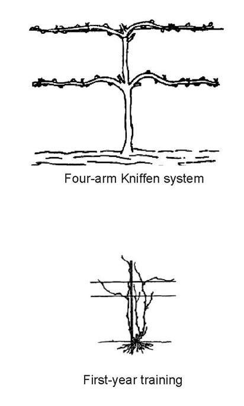

Grapes, one of the oldest cultivated fruits, offer many pluses for the home gardener. They are attractive in the landscape and can be trained to provide shade. Grapes are fairly tolerant of soil fertility, pH, and drought. With proper care, grapes can be productive for 40 years or more.
Grape plants are woody perennial vines that produce fruit on the current season’s shoots. The buds that produce these shoots are formed the previous year. Care of the plant after harvest is important to the formation of buds for the next year.
Grapes have compound buds that are composed of three individual buds. The largest is the primary bud, which produces flowers. If the primary bud is killed by frost or late freezes during spring, then the smaller, secondary bud will produce flowers and a smaller fruit crop. If the secondary buds are also lost or damaged by frost or late freezes, then the tertiary buds will grow and produce mostly foliage because they usually contain no flower clusters. These compound buds are all encased in bud scales.
The most productive fruit buds are those which produce flower clusters, develop opposite the leaves and typically grow from the third through the sixth nodes, counting up from the base on last year's cane. Buds at other nodes will produce tendrils, leaves and vegetative shoots.
Selection
A list of recommended cultivars is provided in Fact Sheet 1423 (see below) and in “Ohio State University Extension Bulletin 919 Midwest Grape Production Guide”. These cultivars have been selected for their potential to thrive in Ohio’s climate and soils and produce quality fruit.
Grape cultivars are usually divided into three categories:
- American (Vitus labrusca)- recommended for planting in Ohio
- European (Vitis vinifera) - suggested for more experienced grape growers who may want to try the "vinifera" grapes which tend to be more cold sensitive and, therefore, more challenging
- Hybrids (often called French hybrids), which are a cross between European and other grape species.
Red, white or blue/black seedless and seeded cultivars can be grown in Ohio. Seedless cultivars grown in the home garden will not match the berry size of those grown commercially in California or South America; however, the flavor of the homegrown grape will be equal. Choose a cultivar based on personal preference, desired usage (e.g., jelly, jam, juice or wine) and current recommendations. Select more than one cultivar to spread the harvest over several weeks. A single variety or even just one vine may be planted since grapes are self-fruitful; consequently, a different variety of grape is not required to cross-pollinate the flowers for fruit development.
Select and use only disease-free, certified plants from local garden centers or reputable mail-order nurseries. Early spring is the preferred time to plant new vines. Purchase or place the mail orders so the plants are received close to when they are to be planted in a prepared bed. Choose one year old plants that have well-developed root systems - sold either potted or as bare-root plants.e one-year-old plants that have well-developed root systems - sold either potted or as bare-root plants. Some nurseries offer two-year-old plants which produce more vigorously but are often much more costly.
Site Selection & Preparation

Grape plants require three years (from one-year-old plants) to become established and produce maximum yields. Grapes are deep-rooted. They quickly grow roots six to eight feet deep in a well-drained, sandy-loam soil. Soil preparation ensures success. Grapes, although fairly tolerant of soil types and pH, do best in a pH of 5.5 to 6.5. American and French hybrid cultivars will tolerate a more acidic (low pH) soil than Vinifera cultivars which grow and produce best in higher pH soil of 6.2 to 6.5. Sunlight exposure is a very important factor in site consideration. Full sun is critical for healthy vines and fruit sweetness. Never locate vines in a frost pocket (see graphic on left). Freezing temperatures in spring can damage or destroy flower buds and clusters. Unusually cold spring weather will reduce pollination and prevent grape formation.
Be sure to take a soil sample, and send it to be tested at a qualified soil testing facility. Follow any recommendations or apply any amendments to the soil by the fall prior to planting grapevines. Some gardeners error in trying to guess a soil's nutrient needs and pH levels. Always take a soil sample and use the soil test as a guide before applying any lime, sulfur or fertilizers. It can never be overemphasized -- oil amendments and fertilizer applications should always be based on the results of a soil test.
Eliminate perennial weeds from the growing site through either cultural techniques (e.g., hoeing or hand-weeding) or the application of herbicides which will not bind to the soil (e.g., glyphosate, glufosinate and pelargonic acid).
Trellising

Grapes must be trellised for good vegetative growth and fruit production. Choose and install trellis systems prior to planting new vines to prevent damaging roots.
Trellising will better allow sunlight to reach each flower cluster, and also promotes good air circulation which cuts down on disease problems. Trellis systems determine how plants should be trained and pruned. There are several methods of trellising grapevines. The three types of trellising systems are shown left.
- Four-arm Kniffen System - One of the easiest and most popular, this system consists of four canes, two on each side of the trunk, trained onto two trellis wires. Two parallel and horizontal wires are stretched between posts for support of the vine. The lower wire is 36" above the ground, and the higher is 60" above the ground. After planting, the strongest cane should be cut back to three to six strong buds. Allow only the most vigorous shoot to develop. The young vine is loosely tied to the lower wire, and all other shoots below the wire are removed. When the shoot grows to the higher wire, it is loosely tied to it. The shoot is then cut off above the top wire. The second year, eight of the most vigorous canes located near the two wires are chosen . The four most vigorous will be the arms and are pruned to five to 12 buds. The other four will be pruned back to four to six buds. These are the renewal spurs. On the mature vine, there are always four canes selected at pruning time. Fruit for the coming year comes from shoots that develop from the buds on these canes. Mature, pruned vines also include four renewal spurs selected to be the fruiting canes for the following winter.
- High Bi-lateral Cordon System - With this system, a single wire is extended between posts and vines are trained to cordon or curtain from the high wire. One of the best training systems to use for backyard grape production is the high bilateral cordon system. This system can position the vine on a trellis within one to two growing seasons. Either a single or multiple trunk vine can be established during training. Once the vegetative shoot(s) reaches the top wire (5½-5'), the tip (apical or distil end) of the shoot should be cut off to release apical dominance. Several new shoots start to grow along the entire length of the lateral shoot. The lateral shoots will eventually harden off and form the new cordons. During pruning, the shoots that grow along the cordons will be cut back to either three or four bud spurs.

- Overhead arbor - Growing grapes on an arbor offers gardeners the combined benefits of fruit production, patio shade and aesthetics. However, the trade-off is vines on arbors generally produce less fruit and have more disease issues from shading.
Planting
Grapevines can be planted as soon as the soil can be worked in the spring. Select healthy plants with a well-developed root system. Space these plants 8' apart for trellis systems or 4' apart for arbors, and orient the trellis rows in a north-south position for maximum sun exposure. For each plant, dig a hole wide enough to spread its entire root system without cramming or bending the roots to fit the space. Do not plant the vines too deeply in the soil. Instead, plant them at the same depth as they were grown in the container. If there is no indication of the original planting depth, then plant the vine no deeper than where the soil covers the highest strong root emerging from the stem.
For grafted cultivars, plant them with the graft above the soil line. If the graft is placed below the soil line, it will produce unwanted suckers. For large root systems, this may require a hole 10"-12" and just as wide to accommodate the roots.
Cut or remove any roots which have been broken or damaged. Extend the roots completely and carefully cover them entirely with soil. After planting the dormant vine, shorten the remaining cane to the two strongest buds. Each of the remaining buds will develop into a cane. This seemingly drastic pruning is done to train the vine to the trellising system and allow the minimal root system to catch up with top growth. Thoroughly water the young vine's roots, since they easily dry out during the process of shipping, holding for sale and transplanting into the soil.
Culture
It is important for plants to become thoroughly established in their first year. To fertilize the plants during the first week, apply eight ounces of 10-10-10 fertilizer per plant and scatter it throughout the rooting area. Supplemental watering may be necessary if the season is dry. Inspect the vines regularly for diseases and insects, and continue to weed the planting bed or a 3' area around the vine's root zone.
Fertilization
In Ohio soils, grapes will require an annual application of nitrogen fertilizer (10-10-10 or 10-6-4). After the first year, apply one pound per vine as the buds begin to swell and a half inch of new growth is present. The next year, apply 1.5 lbs. For future fertilization, take a soil test every three years to evaluate the nutritional status and trends of the soil. Follow the recommendations provided by the soil analysis.
If shoot growth is 3' or less during an entire growing season, then additional nitrogen should be applied to that vine. Using multiple or split applications of nitrogen fertilizers will help to assure that nitrogen will be available for the plant's usage. Other signs of nitrogen deficient plants are poor leaf color (e.g., pale to light-green, yellowish-green or yellow on the oldest leaves), less overall canopy fill and leaf vigor, and possible mid-season vine defoliation.
When applying fertilizer, keep it 6"-12" from the trunk of each vine. With each year of plant maturity, extend the area of fertilizer application further away from the vine's base. However, be cautious with fertilizer applications since high amounts of nitrogen will promote excellent vine and vegetative growth at the expense of fruit production. Avoid nitrogen applications after July when cane growth should not be stimulated, rather canes should be allowed to start hardening off for winter.
Weed Control
Weeds compete with grapevines for nutrients, moisture and sunlight. Keep the area directly under the trellis weed-free. While hand hoeing is the most practical weed control for home gardeners, this technique requires care to prevent damage to the grapevine roots. A 1"-2" layer of aged mulch will also help suppress weeds and conserve moisture. There are manufactured pre-emergent and post-emergent herbicides available to also help control weeds in the fruit landscape. Check the label of all products applied near the grapevine. The label should state that the product is intended for use around grapes. Before using any pesticide, be sure to read and follow label directions prior to any application.
Pruning
Proper pruning increases both the quality and quantity of the current year’s crop. It also improves vine health, ensuring good production year after year. Rigorous pruning keeps vines actively growing and maintained at a manageable size on the trellis system and maximizes canopy exposure to sunlight. A vine that is left unpruned produces heavily for a few years but gradually produces smaller and considerably less fruit.
Prune in late winter after most severe weather has passed. In southern Ohio, this may be late February or early March, while in northern Ohio this may be mid- to late-March or early April. The key factor is to prune before grape buds begin to swell. Here are some pruning terms to learn, regardless of the training and trellising system.
Pruning Terms
- Apical dominance - Lateral buds will not break and grow until the plant hormone IM (lndole-3-Acetic Acid) has been released. This occurs when the dominant shoot tip is removed, and the IAA flows down the shoot to the dormant lateral buds.
- Cane - Brown and woody in appearance, a cane is a one-year-old shoot. Typically, these canes are left after pruning to produce both fruit shoots and new canes.
- Cordons - Called arms, these semi-permanent horizontal branches are trained along the trellis. These canes remain after pruning and produce fruiting canes.
- Fruiting Wood - These one-year-old canes produce the current year's fruit.
- Node - A node is the thickened-portion of shoot or cane where a compound bud is located.
- Renewal Spur - A renewal spur is a cane pruned to one or two nodes on an arm or cordon and used as a cane for fruiting the following year. Also, it is serves as an insurance policy to replace the originally selected spur if damaged in winter.
- Shoot - A shoot is the main unit of vine growth and consists of leaves, stems, tendrils and fruit.
- Spur - A spur is a cane pruned to one to four nodes and can be fruiting or non-fruiting.
- Trunk - The trunk is the main upright portion of the vine that connects the roots to shoots or cordons. Trunks usually last for many years. Some vines may have more than one trunk.
Insect & Disease Control
Good sanitation and a regular inspection are important cultural practices in grape production. A spray schedule is available in OSU Bulletin 780 Controlling Diseases and Insects in Home Fruit Plantings.
Several fact sheets are listed below for common issues in grape plantings.
- Grape Black Rot - https://ohioline.osu.edu/factsheet/plpath-fru-24
- Bitter Rot of Grape - https://ohioline.osu.edu/factsheet/plpath-fru-08
- Anthracnose of Grape - https://ohioline.osu.edu/factsheet/plpath-fru-15
- Downy mildew of Grape - https://ohioline.osu.edu/factsheet/plpath-fru-33
- Read more: https://ohioline.osu.edu/factsheet/hyg-1423